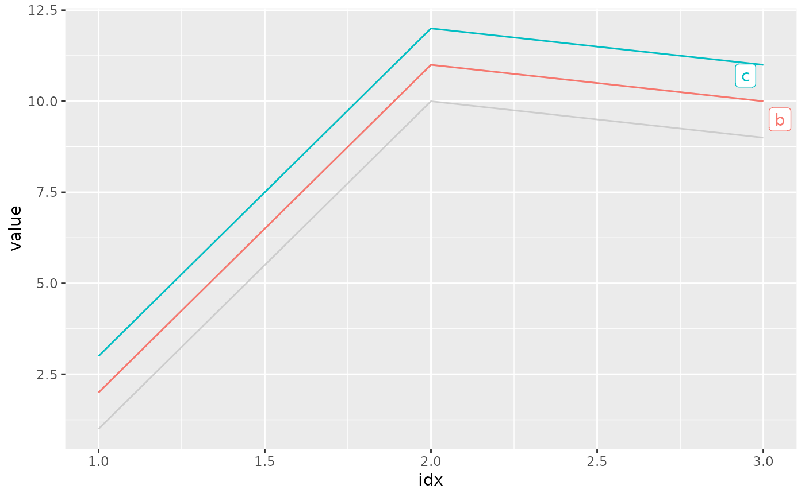
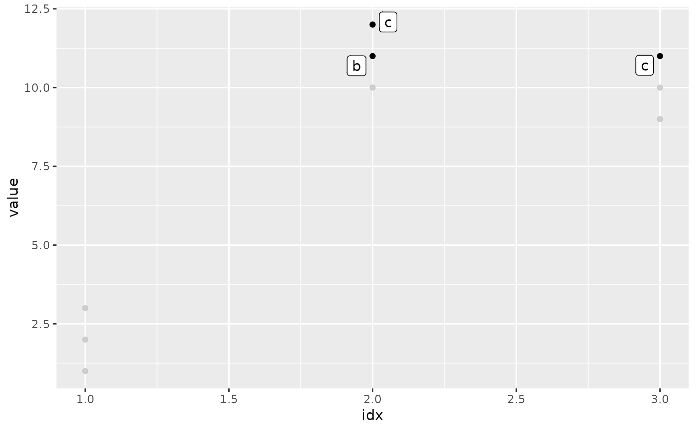
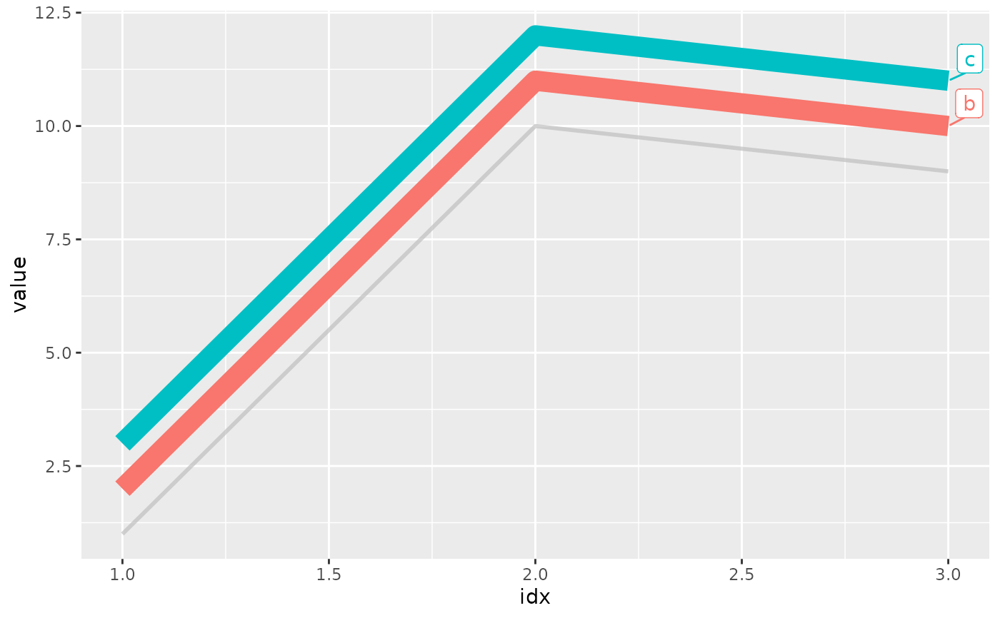

gghighlight() highlights (almost) any geoms according to the given predicates.
Usage
gghighlight(
...,
n = NULL,
max_highlight = 5L,
unhighlighted_params = list(),
use_group_by = NULL,
use_direct_label = NULL,
label_key = NULL,
label_params = list(fill = "white"),
keep_scales = FALSE,
calculate_per_facet = FALSE,
line_label_type = c("ggrepel_label", "ggrepel_text", "text_path", "label_path",
"sec_axis"),
unhighlighted_colour = NULL
)Arguments
- ...
Expressions to filter data, which is passed to
dplyr::filter().- n
Number of layers to clone.
- max_highlight
Max number of series to highlight.
- unhighlighted_params
Aesthetics (e.g. colour, fill, and size) for unhighlighted geoms. Specifying
colour = NULLorfill = NULLwill preserve the original colour.- use_group_by
If
TRUE, usedplyr::group_by()to evaluatepredicate.- use_direct_label
If
TRUE, add labels directly on the plot instead of using a legend.- label_key
Column name for
labelaesthetics.- label_params
A list of parameters, which is passed to
ggrepel::geom_label_repel().- keep_scales
If
TRUE, keep the original data withggplot2::geom_blank()so that the highlighted plot has the same scale with the data.- calculate_per_facet
(Experimental) If
TRUE, include the facet variables to calculate the grouping; in other words, highlighting is done on each facet individually.- line_label_type
(Experimental) Method to add labels (or texts) on the highlighted lines.
"ggrepel_label""ggrepel_text""text_path"Use
geomtextpath::geom_textline()for lines andgeomtextpath::geom_textpath()for paths."label_path"Use
geomtextpath::geom_labelline()for lines andgeomtextpath::geom_labelpath()for paths."sec_axis"Use secondary axis. Please refer to Simon Jackson's blog post for the trick.
- unhighlighted_colour
(Deprecated) Colour for unhighlighted geoms.
Examples
d <- data.frame(
idx = c(1, 1, 1, 2, 2, 2, 3, 3, 3),
value = c(1, 2, 3, 10, 11, 12, 9, 10, 11),
category = rep(c("a", "b", "c"), 3),
stringsAsFactors = FALSE
)
# Highlight the lines whose max values are larger than 10
ggplot(d, aes(idx, value, colour = category)) +
geom_line() + gghighlight(max(value) > 10)
#> label_key: category

# Highlight the points whose values are larger than 10
ggplot(d, aes(idx, value)) +
geom_point() +
gghighlight(value > 10, label_key = category)

# Specify the styles for unhighlighted layer
ggplot(d, aes(idx, value, colour = category)) +
geom_line(linewidth = 5) +
gghighlight(max(value) > 10,
unhighlighted_params = list(linewidth = 1)
)
#> label_key: category
